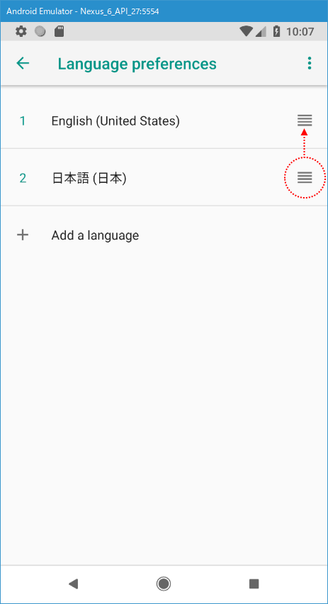

Androidエミュレーターの起動と言語や日本語入力の設定
作成したAVDを使ってAndroidエミュレーターを起動し、言語の設定や日本語入力の設定を行う方法について解説します。
エミュレーターを起動する
最初にAndroid Studioを起動してください。(開いているプロジェクトは特に何でも構いません)。
エミュレーターはAVD Managerから起動します。AVD Managerを起動するため「Tools」メニューの中の「AVD Manager」をクリックしてください。

AVD Managerが起動しました。

作成済のAVDの一覧が表示されています。使用するAVDに表示されている次のアイコンをクリックしてください。
エミュレーターが起動しました。エミュレーターに対して直接タップして操作することができますが、エミュレーターを傾けたり電源をオフにしたりするには、右側に表示されているパネルで操作します。
エミュレーターは実際の端末と同じように操作することができます。例えばChromeを起動して検索をすることもできます。
言語を日本語に設定する
AVDの言語設定はデフォルトで英語に設定されており、「設定」画面などを見てみるとメニューは英語で表示されています。
AVDの言語設定を行うには、最初の画面で次の個所をタップしてください。
アプリ一覧の画面が表示されたら「Setting」をタップしてください。
設定画面が表示されたら下の方へスクロールしていき「System」をタップしてください。
Systemの画面が表示されたら「Languages & input」をタップしてください。
Languages & inputの画面が表示されたら「Language」をタップしてください。
言語の設定画面が表示されます。現在一番上に「English(United States)」だけが表示されています。日本語を追加するため「Add a language」をクリックしてください。
追加する言語の選択画面が表示されますので「日本語」をタップしてください。一番下のほうにあります。
一つ前の言語の設定画面に戻ります。もともとあった「English(United States)」の下に「日本語(日本)」が追加されています。日本語を使用するために「日本語(日本)」の右にある一「≡」アイコンを「English(United States)」のところまでドラッグしてください。

「日本語(日本)」が一番上に表示され、言語設定が日本語に変更されました。
「設定」画面で英語で表示されていたメニューも日本語で表示されるようになりました。

文字入力の時に日本語を入力できるようにする
デフォルトではエミュレーター上で文字入力に使用する仮想キーボードで日本語入力ができるものが選択できません。
日本語入力が可能な仮想キーボードを使えるようにするには、言語の設定の時と同じく「設定」画面を表示したあとに「システム」をタップしてください。
「システム」の画面が表示されたら「言語と入力」をタップしてください。
「言語と入力」画面が表示されたら「仮想キーボード」をタップしてください。

「仮想キーボード」画面が表示されたら「キーボードを管理」をタップしてください。
「キーボードを管理」画面が表示されます。「Japanese IME」の右に表示されているボタンを右へスライドして有効にしてください。

次のようなダイアログが表示されます。「OK」をタップしてください。
日本語入力ができる仮想キーボードが選択可能となりました。
それではエミュレーターを再起動し、仮想キーボードの選択画面を表示してみると日本語キーボードが選択可能となっていることが確認できます。
これで日本語が入力できるようになりました(ただ自分の環境では漢字変換の時によく強制終了してしまいました)。
エミュレーターの画面を閉じる
エミュレーターの画面を閉じるには、エミュレーターの右にあるパネル右上の「×」をクリックしてください。
エミュレーターの画面が閉じました。
-- --
エミュレーターを起動する方法、そして言語や日本語入力に関する設定を行う方法について解説しました。
( Written by Tatsuo Ikura )

著者 / TATSUO IKURA
初心者～中級者の方を対象としたプログラミング方法や開発環境の構築の解説を行うサイトの運営を行っています。